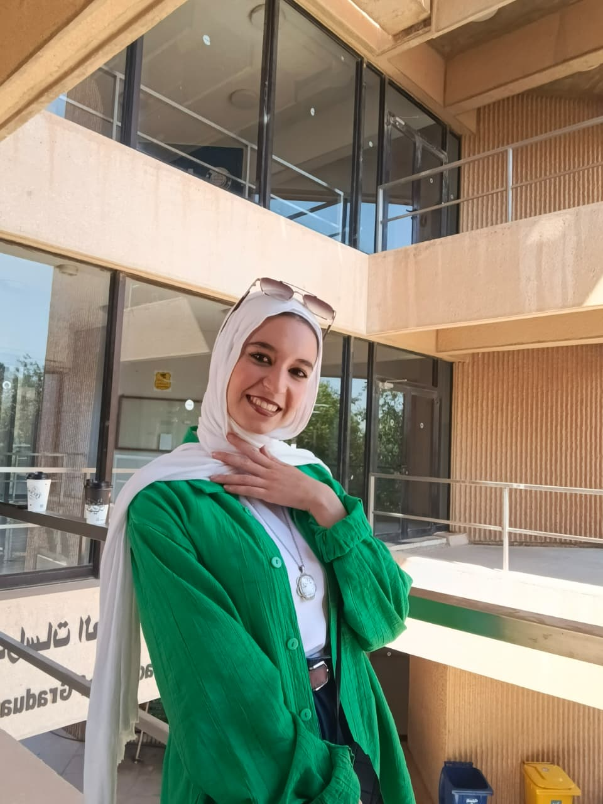

Major: Computer Game Design and Development | Academic Level: Third Year
Contact via Email: ryalkhlouf24@cit.just.edu.jo
| Category | Name | External Reference |
|---|---|---|
| Programming Language | C++ | isocpp.org |
| Game Engine | Unity | unity.com |
| 3D Modeling Tool | Blender | blender.org |
In four years, I envision myself working as a professional Game Developer, creating immersive gaming experiences using engines like Unity and advanced programming languages. My main goal is to design innovative game mechanics, stunning environments, and engaging gameplay.